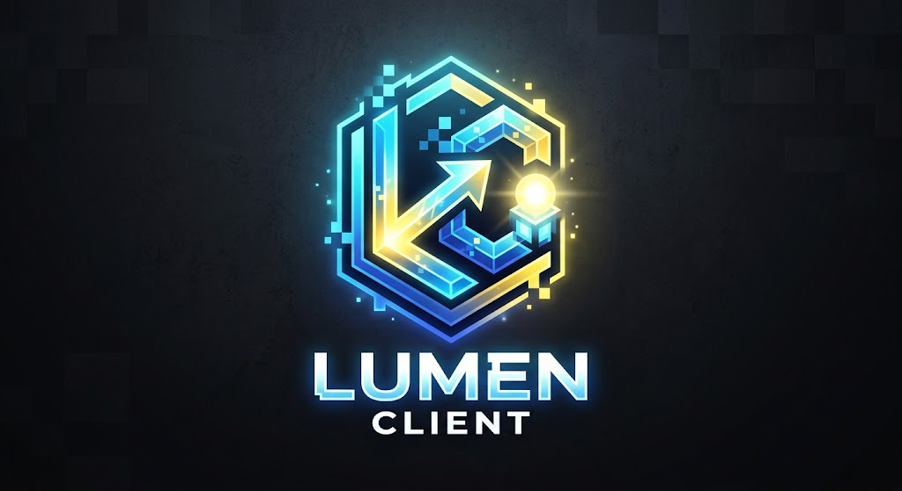

A Minecraft: Java Edition launcher with a built-in CurseForge and Modrinth mod manager.
Download for WindowsSource code
What it does
- Separate profiles with their own Minecraft version, loader (Fabric, Quilt, Forge, NeoForge), mods and worlds.
- Searches Modrinth and CurseForge and installs only mod files that match your Minecraft version and loader, with their required dependencies.
- Signs you in through Microsoft's official sign-in page. Lumen never sees your password.
- Open source. Game files are downloaded straight from Mojang's servers to your computer.